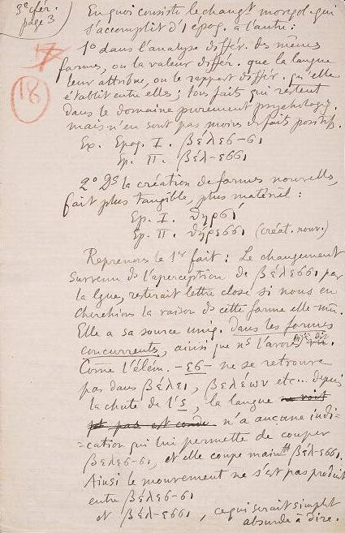
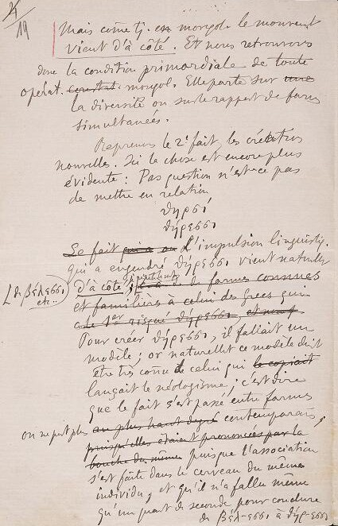

Questo manoscritto è formato da un' unica parte.
Gli appunti vennero scritti da Ferdinand De Saussure,
furono presi a Ginevra in un periodo che va dal 1893 al 1894.
Il documento originale è tratto dalla Biblioteca di Ginevra.
È possibile consultare il manoscritto codificato presso l'archivio online dell'Università di Pisa.
Manoscritto ad opera di:
Ferdinand de Saussure
Fruizione:
Opera ad accesso libero
Acquisito:
Biblioteca di Ginevra
Lingua:
Scritto in lingua francese.
MATERIALE E SUPPORTO
Materiale:
Fogli di carta
Numero di fogli:
19 fogli.
Caratteri:
Scritto in caratteri corsivi dove alcune parole sono sottolineate e altre cancellate.
Lunghezza:
Le pagine hanno in media 25 righe, non considerando elementi esterni.
Scrittura:
Scritto totalmente dall'autore
Condizioni:
Le pagine risultano appena leggibili con alcune parole cancellate.
PAGINA 18

3°troisiémecfér.conférencepage 3être
En quoi consiste le changt.changementmorph.morphologique qui
s'accomplit d' 1uneépoq.époque à l'autre:
1°premier dans l'analysediffér.différentedsdes mêmes
formes, ou la valeurdiffér.différente que la langue
leur attribue, ou le rapport différ.différente qu'elle
établit entre elles; tous faits qui restent
Dans le domaine purement psychologiqpsychologique,
mais n'en sont pas moins des faits positifs.
Exe.Exemple: Epoq.EpoqueIpremierβέλεσ-σιEpoq.EpoqueIIdeuxβέλ-εσσι2°deuxième dans la création de formes nouvelles,
fait plus tangible, plus matériel :
Ep.EpoqueIpremierθηρσEp.EpoqueIIdeuxθήρσσι (créat.créationnouv.nouvelle).
Reprenons le 1°premier fait : Le changement
survenu dsdans l'aperception de βέλεσσι par
la lguelangue, resterait lettre close si nous en
cherchions la raisondsdans cette forme elle-mêmême.
Elle a sa source uniq.unique dans les formes
concurrentes, ainsi que nsnous l'avons déjà dit
??????
.
Comme l'élém.élément -εσ- ne se retrouve
pas dans βέλει,βελέων,etc..., depuis
la chute de l's, la langue
??????
.
??????
n'a aucune indi =
= cation qui lui permette de couper
βέλεσ-σι, et elle coupe mainttmaintenantβέλ-εσσι
Ainsi le mouvement ne s'est pas produit
entre βέλεσ-σι
et βέλ-εσσι, ce qui serait simplement
absurde à dire.
LEGENDA
Termine
Abbreviazioni
Cancellazioni
Correzioni
Parole straniere
VISUALLIZA
Traduzione in italiano
In che consiste il cambiamento morfologico che si compie da un’epoca all’altra :
1° Nell’analisi differente delle stesse forme, o il differente valore che la lingua
attribuisce loro, o il differente rapporto che essa stabilisce tra loro;
tutti fatti che restano nel dominio puramente psicologico, ma non per questo sono
fatti meno positivi.
Esempio: Epoca I βἐλεσ-σι
Epoca II βἐλ-εσσι
2° Nella creazione di forme nuove, fatto più tangibile, più materiale:
Epoca I θηpσι
Epoca II θηpεσσι (nuova creazione)
Riprendiamo il primo fatto: Il cambiamento sopravvenuto nell’appercezione di
βἐλεσσι da parte della lingua resterebbe lettera morta se noi ne cercassimo ragione
in quella forma stessa.
Ha la propria fonte unicamente nelle forme concorrenti, come abbiamo già detto.
Poichè l'elemento -εσ- non si ritrova in βἐλει, βἐλἐωv, ecc. dopo la caduta della
s, la lingua non ha alcuna indicazione che le permetta di tagliare βἐλεσ-σι e taglia
adesso βἐλ-εσσι.
Quindi il movimento non è avvenuto tra βέλεσ-σι e βέλ-εσσι, il che sarebbe semplicemente
assurdo a dirsi.
PAGINA 19

Mais comme tjtoujours en morphol.morphologie, le mouvement
vient d'à côté. Et nous retrouvons
donc la condition primordiale de toute
opérat.opération
??????
morphol.morphologique. Elle porte sur
??????
La diversité ou sur le rapport des formes
simultanées.
Reprenons le 2° deuxièmefait, les créations
nouvelles. Ici la chose est encore plus
évidente : pas question, n'est-ce pas
de mettre en relation
θηρσίθήρεσσι Le fait qui a on L'impulsion linguistiq.linguistique
qui a engendré θήρεσσι vient naturellenaturellement
de βέλεσσι, etc.. d'à côté, je répète le mot
??????
??????
??????
Pour créer θήρεσσι il fallait un
modèle; or naturelletnaturellement ce modèle deitdevait
être très coñuconnu de celui qui
??????
.
lançait le néologisme; c'est dire
que le fait s'est passé entre formes
on ne peut plus
??????
contemporaines,
??????
??????
puisque l'association
s'est faite dans le cerveau du même
individu, et qu'il n'a fallu mêmemôme
qu'un quart de seconde pour conclure
de βέλ-εσσι à θήρ-εσσι
LEGENDA
Termine
Abbreviazioni
Cancellazioni
Correzioni
Parole straniere
VISUALLIZA
Traduzione in italiano
Ma come sempre in morfologia, il movimento viene da ciò che è lì accanto.
E ritroviamo dunque la condizione primordiale di ogni operazione morfologica.
Essa concerne la diversità o il rapporto di forme simultanee.
Riprendiamo il secondo fatto, le nuove creazioni. Qui, la cosa è ancor più evidente:
Non si tratta minimamente di mettere in relazione
θηpσι
θηpεσσι
L'impulsione linguistica che ha generato θηpεσσι viene naturalmente da ciò che
è lì accanto, ripeto l'espressione: da βἐλεσσι, ecc.
Per creare θηpεσσι, ci voleva un modello; ora, naturalmente tale modello doveva
essere assai noto a colui che lanciò il neologismo; come a dire che il fatto è avvenuto
tra forme contemporanee
che più non si può, giacchè l'associazione è stata fatta nel cervello dello stesso
individuo, e non c'è voluto più d'un quarto di secondo per concludere da βἐλ-εσσι
a θηp-εσσι
GLOSSARIO
epoqueEpocaEpoca: è un punto fisso nella storia, segnato da qualche avvenimento memorabile, da cui
si comincia a contare una nuova serie di anni.
langueLinguaLingua: intesa come un sistema di segni che formano il codice di un idioma, va distinta
dalla parole, cioè dall'atto linguistico del parlante, che è "individuale" e "irripetibile".
différenteDiversoDiverso: è un termine che esprime la non somiglianza tra due o più cose.
faitFattoFatto: è un termine che esprime un'avvenimento, azione, fenomeno, ciò che si compie o si
è compiuto.
domainCampoCampo: in psicologia è l’insieme dei fenomeni che in un dato momento appaiono alla coscienza
di un individuo.
psicologiquePsicologicoPsicologico: è un aggettivo che riguarda alla psicologia.
créationCreazioneCreazione: è l'ideazione, invenzione ed esecuzione materiale di un’opera.
tangibleTangibileTangibile: indica un oggetto che è percepibile col tatto.
aperceptionAppercezioneAppercezione: indica una forma particolare di percezione mentale, che si distingue per chiarezza
e consapevolezza di sé.
lettre closeLettera mortaLettera morta: indica propriamente una disposizione priva di valore. scrivere a lettere da speziali.
changementCambiamentoCambiamento: indica la sostituzione o avvicendamento che riguarda in tutto o in parte la sostanza
o l'aspetto di qualcosa o di qualcuno
raisonRagioneRagione: indica la facoltà di pensare, mettendo in rapporto i concetti e le loro enunciazioni,
e insieme la facoltà che guida a ben giudicare, a discernere cioè il vero e il falso,
il giusto e l’ingiusto, il bene e il male.
valeurRapportoRapporto: indica la relazione, corrispondenza o connessione, per lo più reciproca, che intercorre
tra due o più azioni, situazioni e condizioni, fatti e fenomeni.
primordialeFondamentaleFondamentale: indica un qualcosa che costituisce la base di qualcos'altro.
morfologiqueMorfologicoMorfologico: indica un qualcosa che si riferisce alla struttura, alla forma.
formeFormaForma: indica aspetto esteriore con cui si configura ogni oggetto corporeo o fantastico,
o una sua rappresentazione.
simultanéesSimultaneoSimultaneo: indica che avviene nello stesso momento, che si svolge nello stesso tempo.
motParolaParola: indica complesso di fonemi, cioè di suoni articolati, o anche singolo fonema mediante
i quali l’uomo esprime una nozione generica.
modèleModelloModello: indica termine di riferimento ritenuto valido come esempio o prototipo e degno d'imitazione.
néologismeNeologismoNeologismo: indica in genere, parola o locuzione nuova, non appartenente cioè al corpo lessicale
di una lingua, tratta per derivazione o composizione da parole già in uso o introdotta
con adattamenti da altra lingua oppure formata con elementi greci o latini.
contemporainesContemporaneoContemporaneo: chi o ciò che vive o accade nello stesso tempo di qualcun altro o qualcos’altro.
Oppure, cambiando punto di riferimento, si può definire contemporaneo chi o ciò che
appartiene all’età presente.
BIBLIOGRAFIA
FerdinandDe Saussure, TullioDe Mauro, Corso di linguistica generale, Introduzione, traduzione e commento di Tullio De Mauro,
Roma
-
Bari
- 1976.
AlessandroChidichimo, Cahiers Ferdinand de Saussure,
Ginevra
- 2009.